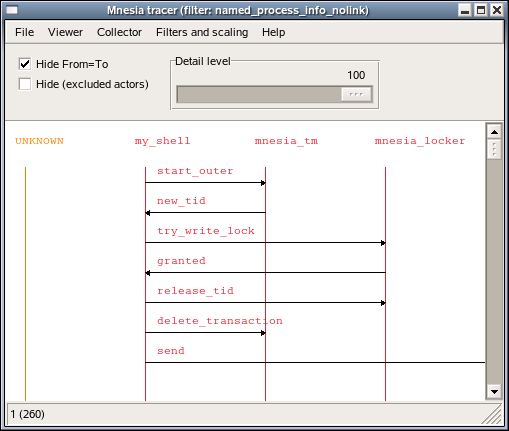

4 Advanced examples
4.1 A simulated Mnesia transaction
The Erlang code for running the simulated Mnesia transaction example in the previous chapter is included in the et/examples/et_demo.erl file:
sim_trans() ->
sim_trans([]).
sim_trans(ExtraOptions) ->
Options = [{dict_insert, {filter, mgr_actors}, fun mgr_actors/1}],
{ok, Viewer} = et_viewer:start_link(Options ++ ExtraOptions),
Collector = et_viewer:get_collector_pid(Viewer),
et_collector:report_event(Collector, 60, my_shell, mnesia_tm, start_outer,
"Start outer transaction"),
et_collector:report_event(Collector, 40, mnesia_tm, my_shell, new_tid,
"New transaction id is 4711"),
et_collector:report_event(Collector, 20, my_shell, mnesia_locker, try_write_lock,
"Acquire write lock for {my_tab, key}"),
et_collector:report_event(Collector, 10, mnesia_locker, my_shell, granted,
"You got the write lock for {my_tab, key}"),
et_collector:report_event(Collector, 60, my_shell, do_commit,
"Perform transaction commit"),
et_collector:report_event(Collector, 40, my_shell, mnesia_locker, release_tid,
"Release all locks for transaction 4711"),
et_collector:report_event(Collector, 60, my_shell, mnesia_tm, delete_transaction,
"End of outer transaction"),
et_collector:report_event(Collector, 20, my_shell, end_outer,
"Transaction returned {atomic, ok}"),
{collector, Collector}.
mgr_actors(E) when is_record(E, event) ->
Actor = fun(A) ->
case A of
mnesia_tm -> trans_mgr;
mnesia_locker -> lock_mgr;
_ -> A
end
end,
{true, E#event{from = Actor(E#event.from),
to = Actor(E#event.to),
contents = [{orig_from, E#event.from},
{orig_to, E#event.to},
{orig_contents, E#event.contents}]}}.If you invoke the et_demo:sim_trans() function, a Viewer window will pop up and the sequence trace will be almost the same as if the following Mnesia transaction would have been run:
mnesia:transaction(fun() -> mnesia:write({my_tab, key, val}) end).And the viewer window will look like:
Erlang R13B03 (erts-5.7.4) [64-bit] [smp:4:4] [rq:4] [async-threads:0] [kernel-poll:false]
Eshell V5.7.4 (abort with ^G)
1> {ok, Viewer} = et_viewer:start([]).
{ok,<0.40.0>;}
2> et_demo:sim_trans().
{ok,{table_handle,<0.45.0>,24596,trace_ts,
#Fun<et_collector.0.62831470>}}
Figure 4.1: A simulated Mnesia transaction which writes one record
4.2 Some convenient functions used in the Mnesia transaction example
The module_as_actor filter converts the Event Records so the module names becomes actors and the invoked functions becomes labels. If the information about who the caller was it will be displayed as an arrow directed from the caller to the callee. The [{message, {caller}}, {return_trace}] options to dbg:tpl/2 function will imply the necessary information in the Erlang traces. Here follows the module_as_actor filter:
module_as_actor(E) when is_record(E, event) ->
case lists:keysearch(mfa, 1, E#event.contents) of
{value, {mfa, {M, F, _A}}} ->
case lists:keysearch(pam_result, 1, E#event.contents) of
{value, {pam_result, {M2, _F2, _A2}}} ->
{true, E#event{label = F, from = M2, to = M}};
_ ->
{true, E#event{label = F, from = M, to = M}}
end;
_ ->
false
end.The plain_process_info filter does not alter the Event Records. It merely ensures that the event not related to processes are skipped:
plain_process_info(E) when is_record(E, event) ->
case E#event.label of
send -> true;
send_to_non_existing_process -> true;
'receive' -> true;
spawn -> true;
exit -> true;
link -> true;
unlink -> true;
getting_linked -> true;
{seq_send, _Label} -> true;
{seq_receive, _Label} -> true;
{seq_print, _Label} -> true;
{drop, _N} -> true;
_ -> false
end.The plain_process_info_nolink filter does not alter the Event Records. It do makes use of the plain_process_info , but do also ensure that the process info related to linking and unlinking is skipped:
plain_process_info_nolink(E) when is_record(E, event) ->
(E#event.label /= link) and
(E#event.label /= unlink) and
(E#event.label /= getting_linked) and
plain_process_info(E). In order to simplify the startup of an et_viewer process with the filters mentioned above, plus some others (that also are found in et/examples/et_demo.erl src/et_collector.erl the et_demo:start/0,1 functions can be used:
start() ->
start([]).
start(ExtraOptions) ->
Options = [{trace_global, true},
{parent_pid, undefined},
{max_actors, infinity},
{max_events, 1000},
{active_filter, module_as_actor}],
et_viewer:start_link(filters() ++ Options ++ ExtraOptions).A simple one-liner starts the tool:
erl -pa ../examples -s et_demoThe filters are included by the following parameters:
filters() ->
[{dict_insert, {filter, module_as_actor},
fun module_as_actor/1},
{dict_insert, {filter, plain_process_info},
fun plain_process_info/1},
{dict_insert, {filter, plain_process_info_nolink},
fun plain_process_info_nolink/1},
{dict_insert, {filter, named_process_info},
fun named_process_info/1},
{dict_insert, {filter, named_process_info_nolink},
fun named_process_info_nolink/1},
{dict_insert, {filter, node_process_info},
fun node_process_info/1},
{dict_insert, {filter, node_process_info_nolink},
fun node_process_info_nolink/1},
{dict_insert, {filter, application_as_actor},
fun application_as_actor/1}
].4.3 Erlang trace of a real Mnesia transaction
The following piece of code et_demo:trace_mnesia/0 activates call tracing of both local and external function calls for all modules in the Mnesia application. The call traces are configured cover all processes (both existing and those that are spawned in the future) and include timestamps for trace data. It do also activate tracing of process related events for Mnesia's static processes plus the calling process (that is your shell). Please, observe that the whereis/1 call in the following code requires that both the traced Mnesia application and the et_viewer is running on the same node:
trace_mnesia() ->
Modules = mnesia:ms(),
Spec = [{message, {caller}}, {return_trace}],
Flags = [send, 'receive', procs, timestamp],
dbg:p(all, [call, timestamp]),
[dbg:tpl(M, [{'_', [], Spec}]) || M <- Modules],
LocallyRunningServers = [M || M <- Modules, whereis(M) /= undefined],
[dbg:p(whereis(RS), Flags) || RS <- LocallyRunningServers],
dbg:p(self(), Flags),
LocallyRunningServers.The et_demo:live_trans/0 function starts the global Collector, starts a Viewer, starts Mnesia, creates a local table, activates tracing (as described above) and registers the shell process is as 'my_shell' for clarity. Finally a simple Mnesia transaction that writes a single record is run:
live_trans() ->
live_trans([]).
live_trans(ExtraOptions) ->
Options = [{title, "Mnesia tracer"},
{hide_actions, true},
{active_filter, named_process_info_nolink}],
et_demo:start(Options ++ ExtraOptions),
mnesia:start(),
mnesia:create_table(my_tab, [{ram_copies, [node()]}]),
et_demo:trace_mnesia(),
register(my_shell, self()),
mnesia:transaction(fun() -> mnesia:write({my_tab, key, val}) end).Now we run the et_demo:live_trans/0 function:
erl -pa ../examples
Erlang R13B03 (erts-5.7.4) [64-bit] [smp:4:4] [rq:4]
[async-threads:0] [kernel-poll:false]
Eshell V5.7.4 (abort with ^G)
1> et_demo:live_trans().
{atomic,ok}Please, explore the different filters in order to see how the traced transaction can be seen from different point of views:
Figure 4.2: A real Mnesia transaction which writes one record
4.4 Erlang trace of Megaco startup
The Event Tracer (ET) tool was initially written in order to demonstrate how messages where sent over the Megaco protocol. This were back in the old days before the standard bodies of IETF and ITU had approved Megaco (also called H.248) as an international standard.
In the Megaco application of Erlang/OTP, the code is carefully instrumented with calls to et:trace_me/5. For each call a detail level is given in order to enable dynamic control of the trace level in a simple manner.
The megaco_filter module implements a customized filter for Megaco messages. It does also make use of trace_global combined with usage of the trace_pattern:
-module(megaco_filter).
-export([start/0]).
start() ->
Options =
[{event_order, event_ts},
{scale, 3},
{max_actors, infinity},
{trace_pattern, {megaco, max}},
{trace_global, true},
{dict_insert, {filter, megaco_filter}, fun filter/1},
{active_filter, megaco_filter},
{title, "Megaco tracer - Erlang/OTP"}],
et_viewer:start(Options).First we start an Erlang node with a global Collector and its Viewer.
erl -sname observer
Erlang R13B03 (erts-5.7.4) [64-bit] [smp:4:4] [rq:4] [async-threads:0] [kernel-poll:false]
Eshell V5.7.4 (abort with ^G)
(observer@falco)1> megaco_filter:start().
{ok,<0.48.0>}Secondly we start another Erlang node which we connect the observer node, before we start the application that we want to trace. In this case we start a Media Gateway Controller that listens for both TCP and UDP on the text and binary ports for Megaco:
erl -sname mgc -pa ../../megaco/examples/simple
Erlang R13B03 (erts-5.7.4) [64-bit] [smp:4:4] [rq:4] [async-threads:0] [kernel-poll:false]
Eshell V5.7.4 (abort with ^G)
(mgc@falco)1> net:ping(observer@falco).
pong
(mgc@falco)2> megaco:start().
ok
(mgc@falco)3> megaco_simple_mgc:start().
{ok,[{ok,2944,
{megaco_receive_handle,{deviceName,"controller"},
megaco_pretty_text_encoder,[],megaco_tcp,dynamic}},
{ok,2944,
{megaco_receive_handle,{deviceName,"controller"},
megaco_pretty_text_encoder,[],megaco_udp,dynamic}},
{ok,2945,
{megaco_receive_handle,{deviceName,"controller"},
megaco_binary_encoder,[],megaco_tcp,dynamic}},
{ok,2945,
{megaco_receive_handle,{deviceName,"controller"},
megaco_binary_encoder,[],megaco_udp,dynamic}}]}And finally we start an Erlang node for the Media Gateways and connect to the observer node. Each Media Gateway connects to the controller and sends an initial Service Change message. The controller accepts the gateways and sends a reply to each one using the same transport mechanism and message encoding according to the preference of each gateway. That is all combinations of TCP/IP transport, UDP/IP transport, text encoding and ASN.1 BER encoding:
Erlang R13B03 (erts-5.7.4) [64-bit] [smp:4:4] [rq:4] [async-threads:0] [kernel-poll:false]
Eshell V5.7.4 (abort with ^G)
(mg@falco)1> net:ping(observer@falco).
pong
(mg@falco)2> megaco_simple_mg:start().
[{{deviceName,"gateway_tt"},
{error,{start_user,megaco_not_started}}},
{{deviceName,"gateway_tb"},
{error,{start_user,megaco_not_started}}},
{{deviceName,"gateway_ut"},
{error,{start_user,megaco_not_started}}},
{{deviceName,"gateway_ub"},
{error,{start_user,megaco_not_started}}}]
(mg@falco)3> megaco:start().
ok
(mg@falco)4> megaco_simple_mg:start().
[{{deviceName,"gateway_tt"},
{1,
{ok,[{'ActionReply',0,asn1_NOVALUE,asn1_NOVALUE,
[{serviceChangeReply,
{'ServiceChangeReply',
[{megaco_term_id,false,["root"]}],
{serviceChangeResParms,
{'ServiceChangeResParm',
{deviceName,"controller"},
asn1_NOVALUE,asn1_NOVALUE,asn1_NOVALUE,
asn1_NOVALUE}}}}]}]}}},
{{deviceName,"gateway_tb"},
{1,
{ok,[{'ActionReply',0,asn1_NOVALUE,asn1_NOVALUE,
[{serviceChangeReply,
{'ServiceChangeReply',
[{megaco_term_id,false,["root"]}],
{serviceChangeResParms,
{'ServiceChangeResParm',
{deviceName,"controller"},
asn1_NOVALUE,asn1_NOVALUE,asn1_NOVALUE,
asn1_NOVALUE}}}}]}]}}},
{{deviceName,"gateway_ut"},
{1,
{ok,[{'ActionReply',0,asn1_NOVALUE,asn1_NOVALUE,
[{serviceChangeReply,
{'ServiceChangeReply',
[{megaco_term_id,false,["root"]}],
{serviceChangeResParms,
{'ServiceChangeResParm',
{deviceName,"controller"},
asn1_NOVALUE,asn1_NOVALUE,asn1_NOVALUE,
asn1_NOVALUE}}}}]}]}}},
{{deviceName,"gateway_ub"},
{1,
{ok,[{'ActionReply',0,asn1_NOVALUE,asn1_NOVALUE,
[{serviceChangeReply,
{'ServiceChangeReply',
[{megaco_term_id,false,["root"]}],
{serviceChangeResParms,
{'ServiceChangeResParm',
{deviceName,"controller"},
asn1_NOVALUE,asn1_NOVALUE,
asn1_NOVALUE,...}}}}]}]}}}]The Megaco adopted viewer looks like this, when we have clicked on the [gateway_tt] actor name in order to only display the events regarding that actor:

Figure 4.3: The viewer adopted for Megaco
A pretty printed Megaco message looks like this:

Figure 4.4: A textual Megaco message
And the corresponding internal form for the same Megaco message looks like this:

Figure 4.5: The internal form of a Megaco message